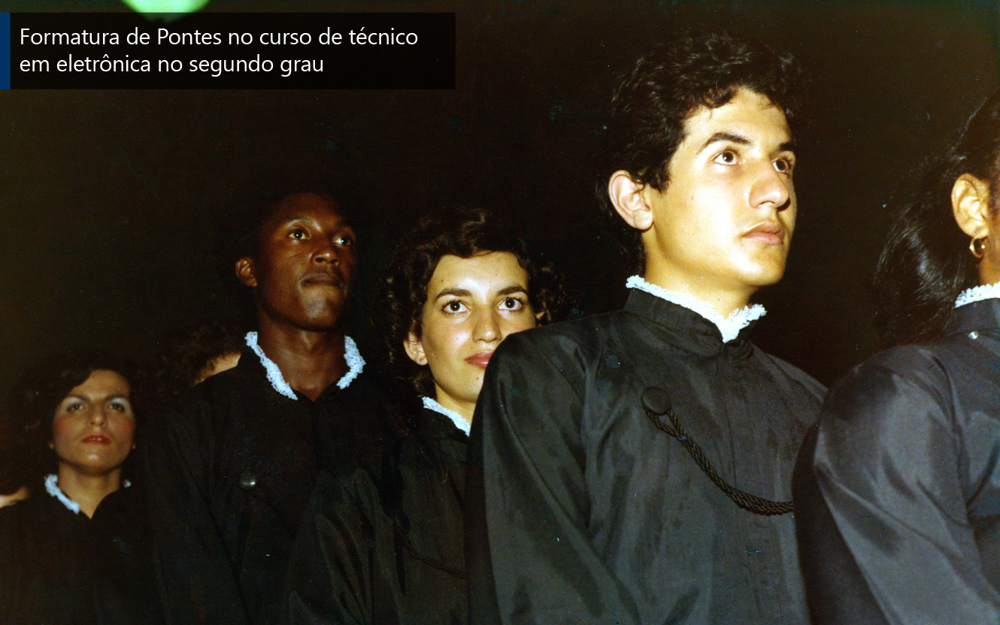
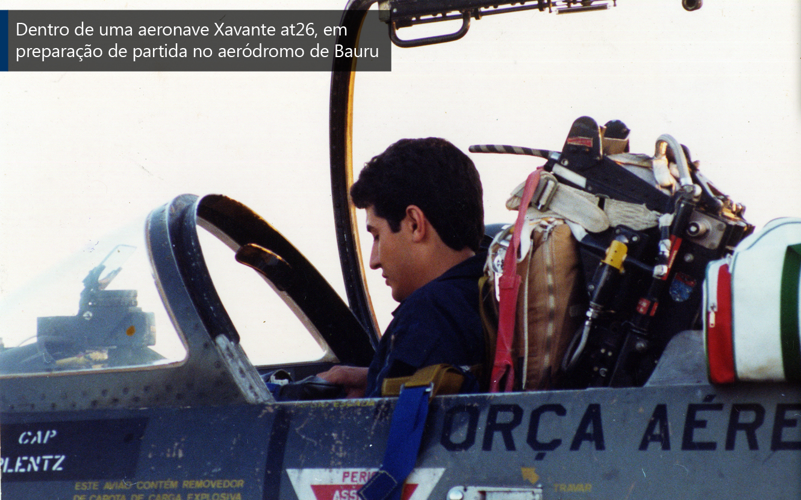
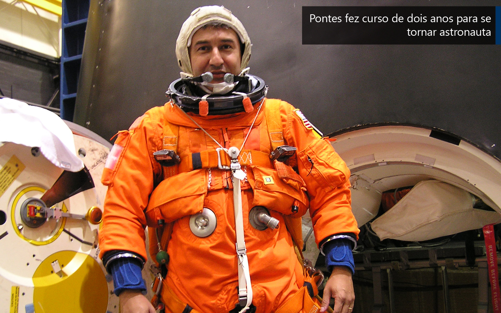
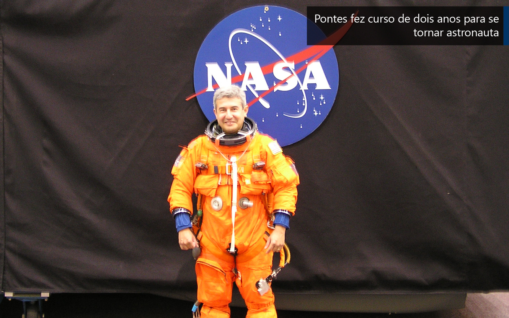
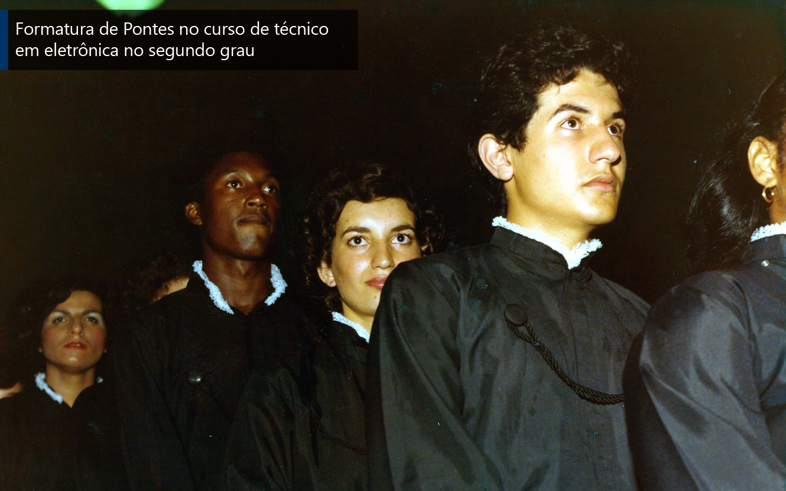
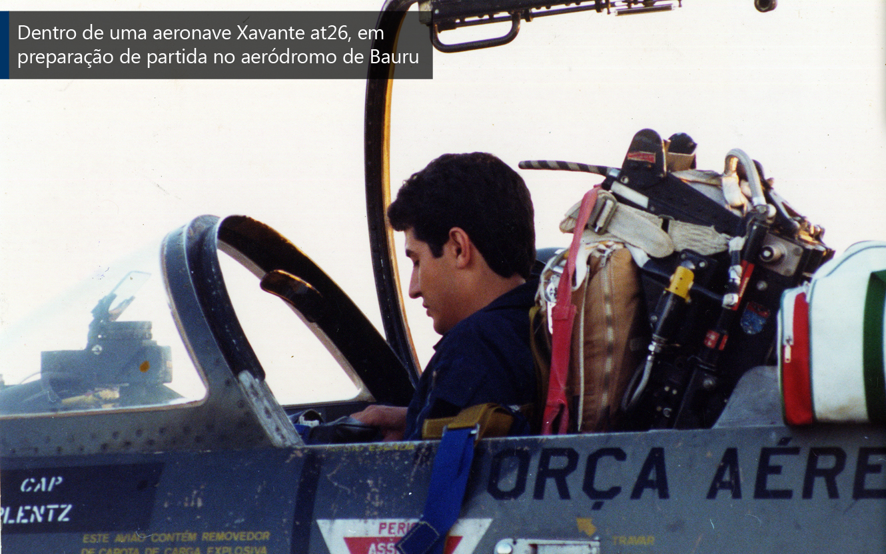
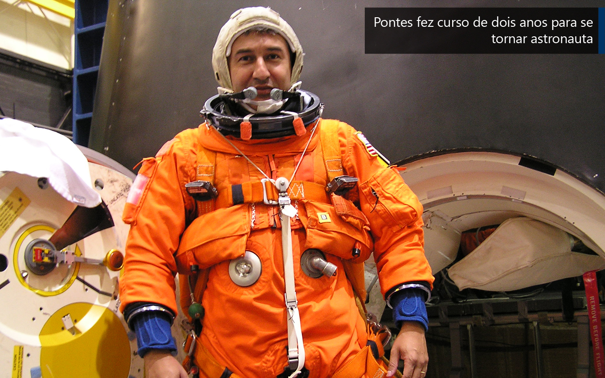
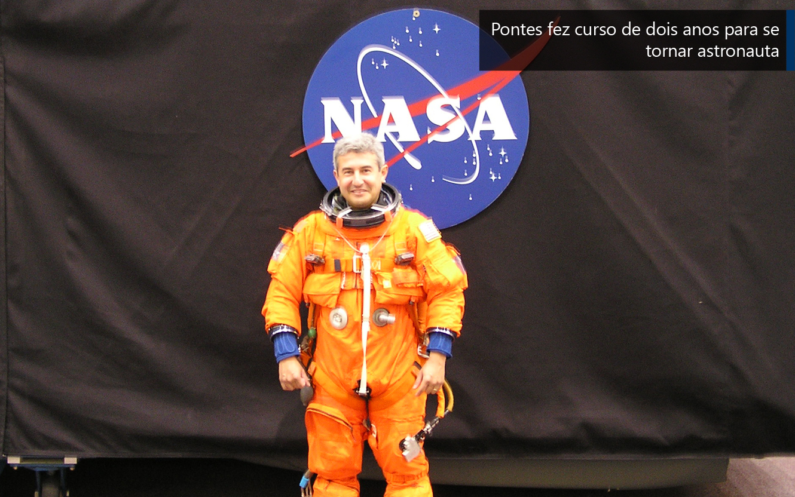

ASAS À IMAGINAÇÃO
‘Quando era criança ficava imaginando como seria ter asas’, lembra o astronauta.
Marcos Pontes ficou conhecido no Brasil e no mundo como o primeiro e único astronauta brasileiro, mas foi ainda na infância que ele começou a construir seu sonho. Quando nem imaginava ir para o espaço, o menino Marcos sonhava em ser piloto e “invejava” os profissionais voando no céu enquanto brincava com o irmão mais velho Luís Carlos Pontes no aeroclube de Bauru (SP), cidade onde nasceu, em 1963.
Marcos Pontes. Foto: Arquivo pessoal
“Eu olhava os aviões e ficava imaginando como é ter asas, poder voar, passar por dentro das nuvens, olhar a Terra lá de cima do avião. Aqui (aeroclube) foi o começo deste sonho e é importante sonhar, porque sem sonho você não consegue imaginar para onde quer ir”, afirma o astronauta.
A paixão de Marcos pelo céu também foi incentivada pela paixão do irmão Luís por naves e pelo espaço. “Quando eu era criança, meu irmão mandava cartas para a NASA e recebia fotos da época da Apollo. No quarto dele tinha uma parede com muitas fotos de astronautas, fotos da Lua etc. Aquilo para mim foi um incentivo, embora estivesse ainda muito distante”, lembra.
Luís Carlos também sonhava em ser piloto, mas a vida teve outro rumo. Porém, conseguir ajudar o irmão 13 anos mais novo a realizar o sonho o deixou muito feliz. “Quando ele [Marcos] era criança sempre foi estudioso, tinha disciplina. Ele desenhava foguetes, aviões, helicóptero, já era um prenúncio, mas ninguém imaginava. Ele subiu degrau por degrau. Primeiro aviador, depois piloto de teste, engenheiro e então astronauta”, conta Luís. Foi ele quem avisou Marcos, que fazia mestrado nos Estados Unidos, na época, sobre a seleção para astronauta.
Marcos Pontes com os pais. Foto: Arquivo pessoal
Apesar do desejo de ser piloto, Marcos não tinha dinheiro para pagar o curso e, após o conselho dos futuros colegas de profissão de fazer parte da Força Aérea Brasileira, ele decidiu ingressar na carreira militar. Para se preparar para o vestibular, fez cursos técnicos de eletricista e técnico em eletrônica. Em 1981, entrou na Academia da Força Aérea e depois estudou administração pública.
Mas, com o desejo de alçar voos mais altos, Marcos cursou engenharia aeronáutica no Instituto de Tecnologia Aeronáutica (ITA). Ele ainda fez mestrado em otimização de trajetórias espaciais e mestrado em engenharia de sistemas nos Estados Unidos. Quando estava no doutorado em engenharia de sistemas foi selecionado para ser o primeiro astronauta brasileiro.
 






